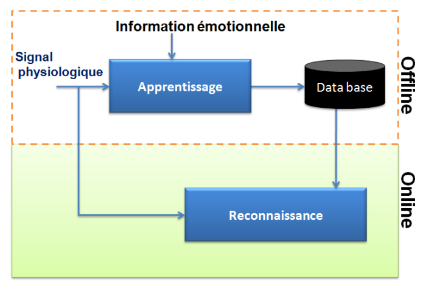
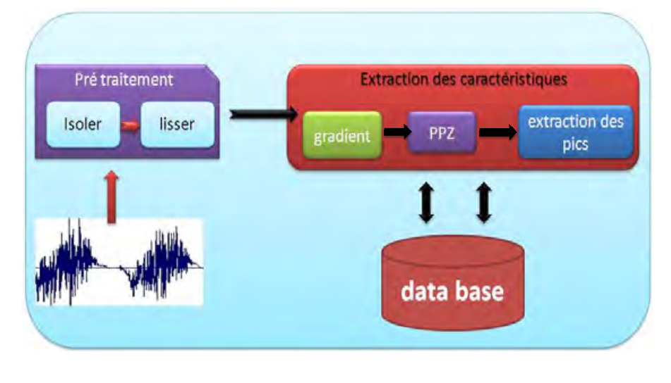

Contribution 2 : approche monomodale de reconnaissance des émotions basée sur les signaux physiologiques
Acquisition des données
Dans notre travail nous allons travailler sur la Reconnaissance des émotions à partir des signaux physiologiques.
nous avons utilisé les signaux physiologiques fournis par
MIT (Massachusetts Institute of Technology) utilisés par J.Healey dans sa thèse
[Healey 2000]. Les données de MIT ont été recueillis par 4 capteurs :
- la résistance de la peau (GSR)
- la respiration
- la pression sanguine (BVP)
- le signal eléctromyographie (EMG), auxquels s'ajoute le rythme cardiaque
déduit des variations de pression sanguine.
Ils ont utilisé la méthode d'un seul participant pendant plusieurs jours pour la
collecte des données. Le participant était un acteur qui a exprimé huit émotions
différentes à l'aide d'un système développé par Clynes [Clynes 1982]. L'acteur n'exprime pas
seulement chaque émotion de l'extérieur, mais il doit vivre la situation de
chaque émotion de l'interne.
Les données collectées représentent 25 minutes d'enregistrement par jour, sur une
période de 20 jours. Chaque jour contient 4 signaux correspondant aux 4 modalités
citées ci-dessus, représentant les 8 émotions basiques à identifier (aucune émotion,
colère, haine, peine, amour platonique, amour romantique, joie et vénération). La
numérisation des signaux obtenus a été effectuée avec un échantillonnage de 20
échantillons par seconde. Chaque signal est donc formé par 30.000 échantillons.
La procédure de Clynes consiste à enregistrer les tensions ressenties par le candidat au fur
et à mesure qu'il écoute une musique ou regarde des photos favorisant
l'émergence d'une expression émotionnelle spécifique (Les cycles sensibles). Le participant
doit appuyer sur un bouton (sentograph) avec une force comparable à la
tension ressentie. Plus il ressent de tension, plus il appuie avec force, et vice-versa.
La procédure de Clynes incite le sujet à exprimer la même émotion pendant 3 minutes.
Pendant la procédure de génération des émotions, l'acteur doit donner son
interprétation de chaque émotion et choisir des photos en liaison avec chaque émotion.
Le tableau suivant montre l'ensemble des images utilisées pour provoquer les
huit émotions ainsi qu'une description de ces états émotionnels.
Schéma général de la méthode proposée
La méthode de détection d'émotions que nous proposons est composée de deux étapes principales. La première étape, appelée
"Apprentissage", est une étape "offine" qui prend en entrée pour chacune des différentes modalités :
le signal physiologique et l'information émotionnelle et donne
en sortie la base émotionnelle relative à cette modalité. Elle permet, à partir d'un
signal physiologique dont les émotions correspondantes sont connues, de trouver
et d'extraire les formes caractéristiques typiques pour chacune des émotions. Nous
utilisons ces formes pour générer des vecteurs caractéristiques que nous regroupons ensemble pour former une base émotionnelle d'apprentissage.

La deuxième étape, appelée détection, est une étape "online". Elle prend en
entrée la base émotionnelle d'apprentissage créée à l'étape précédente et un signal
physiologique dont les émotions sont inconnues. Elle analyse ensuite en temps réel ces
signaux physiologiques pour détecter d'éventuelles activités émotionnelles. Lorsque
une émotion est détectée, nous isolons la partie du signal correspondante et nous
calculons son vecteur caractéristique. Nous cherchons ensuite dans la base d'apprentissage,
l'émotion la plus proche en appliquant l'algorithme de calcul de distance
euclidienne.
- Apprentissage
La première étape de la méthode de détection proposée, est l'étape d'apprentissage.
Le but de cette étape est la génération d'une base émotionnelle formée par les
vecteurs caractéristiques de chaque émotion. Ces vecteurs sont regroupés par modalité.
La génération de ces vecteurs est effectuée en suivant les différentes étapes
données par la Figure suivante et qui sont :

Le découpage : cette étape permet de découper le signal d'entrée représentant les huit
émotions afin d'isoler une émotion donnée.
Le lissage : Cette étape est importante car elle permet de débruiter le signal d'entrée.
Ceci rend les traitements qui suivent beaucoup plus efficaces.
Détection des pics : Elle permet de détecter les activités émotionnelles dans le
signal et d'isoler les parties correspondantes.
Extraction des caractéristiques : Elle génère un vecteur caractéristique décrivant la partie du signal
extrait précédemment.
Nous détaillons dans la suite chacune de ces différentes étapes en commençant tout
d'abord par le découpage.
- Détection